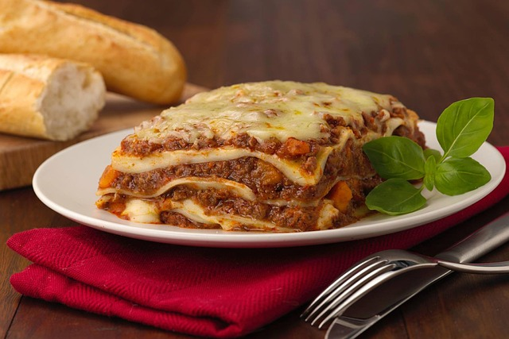

Go back to homepage
To make Lasagna...

Lasagna is a traditional Italian dish made by layering wide, flat pasta sheets with rich meat sauce, creamy béchamel (or ricotta), and melted cheese — usually mozzarella and Parmesan.
It's baked until golden and bubbling, delivering a hearty, comforting meal that's loved around the world.
Ingredients
- Meat: This super meaty lasagna has sweet Italian sausage and lean ground beef.
- Onion and Garlic: An onion and two cloves of garlic are cooked with the meat to add tons of flavor.
- Cheeses: Parmesan, mozzarella, and ricotta cheese make this lasagna extra decadent.
- Lasagna noodles: Use store-bought or homemade lasagna noodles.
- Spices and seasonings: This lasagna recipe is flavored with fresh parsley, dried basil leaves, salt, Italian seasoning, fennel seeds, and black pepper.
- Tomato products: You'll need a can of crushed tomatoes, two cans of tomato sauce, and two cans of tomato paste.
- Egg: An egg helps bind the ricotta so it doesn't ooze out of the lasagna when you cut into it.
Steps
- Make the meat sauce.
- Cook the noodles.
- Make the ricotta mixture.
- Layer the lasagna
- Cover with foil and bake